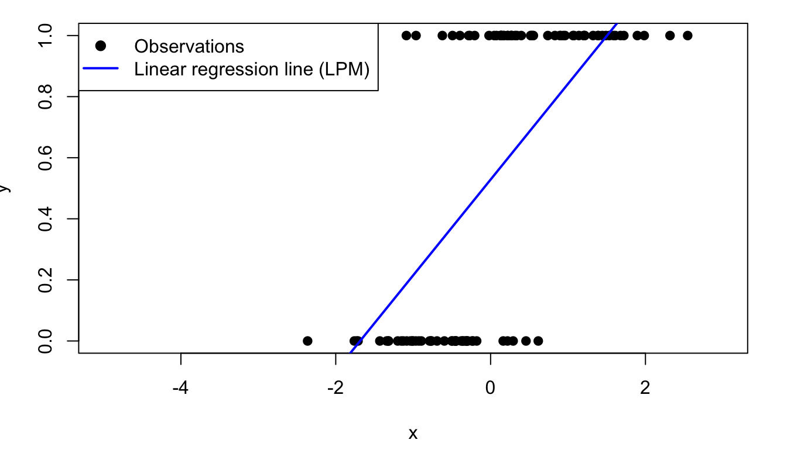
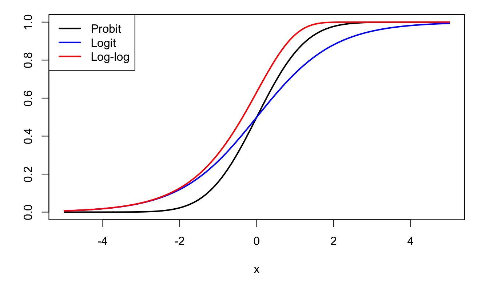
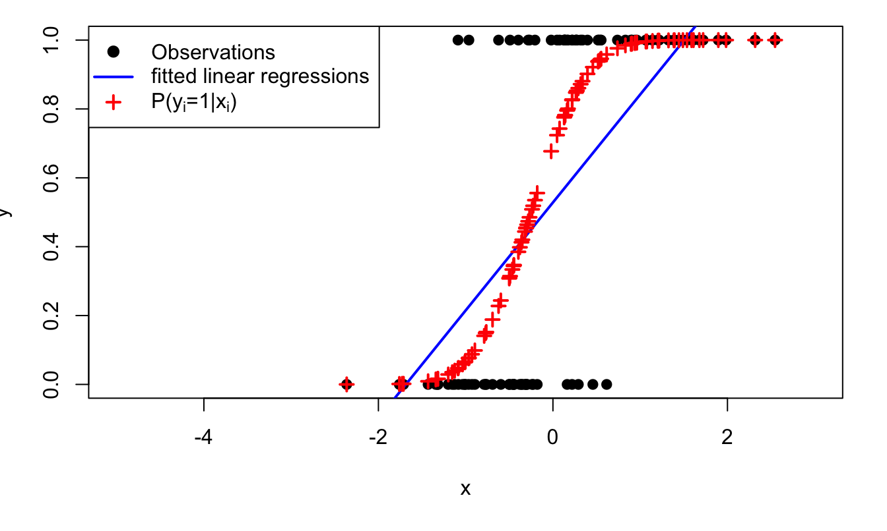
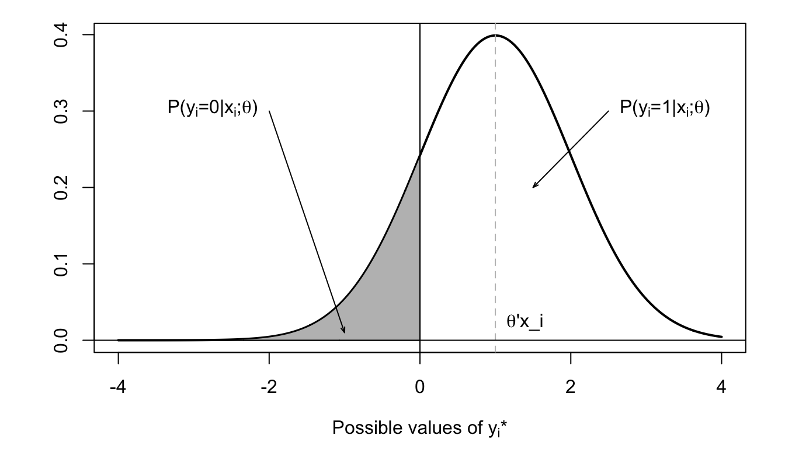
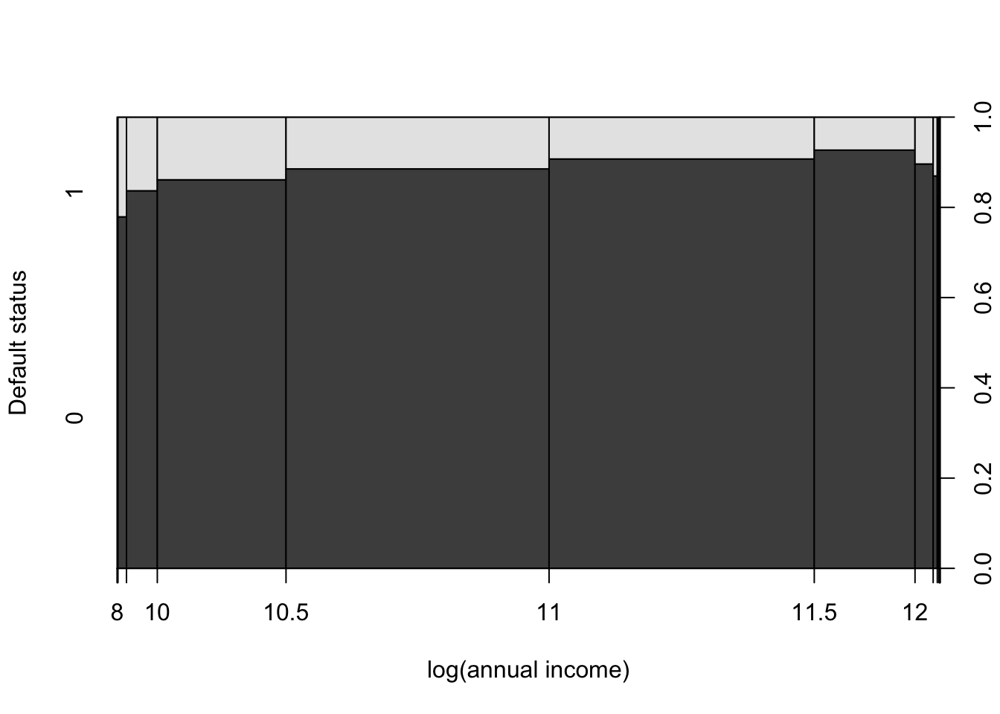
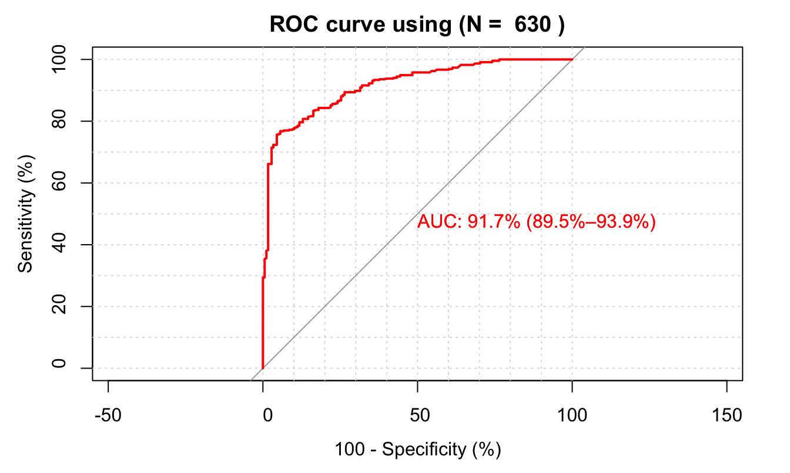

Chapter 7 Binary-choice models
Prerequisites. Conditional probability, Bernoulli variables, linear regression, and maximum-likelihood estimation.
After working through this chapter, you should be able to:
- Explain why a linear probability model has heteroskedastic disturbances and potentially inadmissible fitted values.
- Interpret probit and logit models through conditional probabilities and latent variables.
- Write and maximize the likelihood of a binary-choice model.
- Compute and interpret marginal effects.
- Compare models using likelihood-based measures and assess predictions with classification rates and ROC curves.
Roadmap. We start from the linear probability model and then introduce nonlinear probability functions. A latent-variable representation motivates probit and logit specifications. The remaining sections cover estimation, marginal effects, goodness of fit, and predictive evaluation before the exercises in Section 7.7.
Many economic outcomes are qualitative rather than continuous: a household defaults or does not, an individual participates or does not, and a firm enters a market or stays out. When \(y_i\in\{0,1\}\), the object to model is the conditional probability \(\mathbb{P}(y_i=1\mid\mathbf{x}_i)\). The covariates are collected in a \(K\times1\) vector \(\mathbf{x}_i\).
The spectrum of applications is wide:
- Binary decisions (e.g. in referendums, being owner or renter, living in the city or in the countryside, in/out of the labour force,…),
- Contamination (disease or default),
- Success/failure outcomes.
Without loss of generality, the model reads: \[\begin{equation}\label{eq:binaryBenroulli} y_i | \mathbf{X} \sim \mathcal{B}(g(\mathbf{x}_i;\boldsymbol\theta)), \end{equation}\] where \(g(\mathbf{x}_i;\boldsymbol\theta)\) is the parameter of the Bernoulli distribution. In other words, conditionally on \(\mathbf{X}\): \[\begin{equation} y_i = \left\{ \begin{array}{cl} 1 & \mbox{ with probability } g(\mathbf{x}_i;\boldsymbol\theta)\\ 0 & \mbox{ with probability } 1-g(\mathbf{x}_i;\boldsymbol\theta), \end{array} \right.\tag{7.1} \end{equation}\] where \(\boldsymbol\theta\) is a vector of parameters to be estimated.
An estimation strategy is to assume that \(g(\mathbf{x}_i;\boldsymbol\theta)\) can be proxied by \(\tilde{\boldsymbol\theta}'\mathbf{x}_i\) and to run a linear regression to estimate \(\tilde{\boldsymbol\theta}\) (a situation called Linear Probability Model, LPM): \[ y_i = \tilde{\boldsymbol\theta}'\mathbf{x}_i + \varepsilon_i. \] If the conditional probability is truly linear, OLS consistently estimates its coefficients; if it is nonlinear, OLS instead estimates the coefficients of the best linear projection. The fitted values can fall below zero or above one. Moreover, because \(\mathbb{V}ar(y_i\mid\mathbf{x}_i)=p_i(1-p_i)\), the disturbances are generally heteroskedastic, so heteroskedasticity-robust standard errors should be used. The disturbances cannot be conditionally Gaussian because \(y_i\in\{0,1\}\).
Figure 7.1 illustrates the fit resulting from an application of the LPM model to binary (dependent) variables.

Figure 7.1: Fitting a binary variable with a linear model (Linear Probability Model, LPM). The model is \(\mathbb{P}(y_i=1|x_i)=\Phi(0.5+2x_i)\), where \(\Phi\) is the c.d.f. of the normal distribution and where \(x_i \sim \,i.i.d.\,\mathcal{N}(0,1)\).
Except for its last row (LPM case), Table 7.1 provides examples of functions \(g\) valued in \([0,1]\), and that can therefore used in models of the type: \(\mathbb{P}(y_i=1|\mathbf{x}_i;\boldsymbol\theta) = g(\boldsymbol\theta'\mathbf{x}_i)\) (see Eq. (7.1)). The “linear” case is given for comparison, but note that it does not satisfy \(g(\boldsymbol\theta'\mathbf{x}_i) \in [0,1]\) for any value of \(\boldsymbol\theta'\mathbf{x}_i\).
| Model | Function \(g\) | Derivative |
|---|---|---|
| Probit | \(\Phi\) | \(\phi\) |
| Logit | \(\dfrac{\exp(x)}{1+\exp(x)}\) | \(\dfrac{\exp(x)}{(1+\exp(x))^2}\) |
| Complementary log-log | \(1 - \exp(-\exp(x))\) | \(\exp(-\exp(x))\exp(x)\) |
| linear (LPM) | \(x\) | 1 |
Figure 7.2 displays the first three \(g\) functions appearing in Table 7.1.

Figure 7.2: Probit, Logit, and Log-log functions.
The probit and the logit models are popular binary-choice models. In the probit model, we have: \[\begin{equation} g(z) = \Phi(z),\tag{7.2} \end{equation}\] where \(\Phi\) is the c.d.f. of the normal distribution. And for the logit model: \[\begin{equation} g(z) = \frac{1}{1+\exp(-z)}.\tag{7.3} \end{equation}\]
Figure 7.3 shows the conditional probabilities associated with the (probit) model that had been used to generate the data of Figure 7.1.

Figure 7.3: The model is \(\mathbb{P}(y_i=1|x_i)=\Phi(0.5+2x_i)\), where \(\Phi\) is the c.d.f. of the normal distribution and where \(x_i \sim \,i.i.d.\,\mathcal{N}(0,1)\). Crosses give the model-implied probabilities of having \(y_i=1\) (conditional on \(x_i\)).
7.1 Latent-variable and utility interpretations
Probability functions specify how covariates map into observed choices. A latent-variable representation supplies an economic interpretation: the observed binary outcome records whether an unobserved index crosses a threshold.
The probit model has an interpretation in terms of latent variables, which, in turn, is often exploited in structural models, called Random Utility Models (RUM). In such structural models, it is assumed that the agents that have to take the decision do so by selecting the outcome that provides them with the larger utility (for agent \(i\), two possible outcomes: \(y_i=0\) or \(y_i=1\)). Part of this utility is observed by the econometrician —it depends on the covariates \(\mathbf{x}_i\)— and part of it is latent.
In the probit model, we have: \[ \mathbb{P}(y_i=1|\mathbf{x}_i;\boldsymbol\theta) = \Phi(\boldsymbol\theta'\mathbf{x}_i) = \mathbb{P}(-\varepsilon_{i}<\boldsymbol\theta'\mathbf{x}_i), \] where \(\varepsilon_{i} \sim \mathcal{N}(0,1)\). That is: \[ \mathbb{P}(y_i=1|\mathbf{x}_i;\boldsymbol\theta) = \mathbb{P}(0< y_i^*), \] where \(y_i^* = \boldsymbol\theta'\mathbf{x}_i + \varepsilon_i\), with \(\varepsilon_{i} \sim \mathcal{N}(0,1)\). Variable \(y_i^*\) can be interpreted as a (latent) variable that determines \(y_i\) (since \(y_i = \mathbb{I}_{\{y_i^*>0\}}\)).
Figure 7.4 illustrates this situation.

Figure 7.4: Distribution of \(y_i^*\) conditional on \(\mathbf{x}_i\).
Assume that agent (\(i\)) chooses \(y_i=1\) if the utility associated with this choice (\(U_{i,1}\)) is higher than the one associated with \(y_i=0\) (that is \(U_{i,0}\)). Assume further that the utility of agent \(i\), if she chooses outcome \(j\) (\(\in \{0,1\}\)), is given by \[ U_{i,j} = V_{i,j} + \varepsilon_{i,j}, \] where \(V_{i,j}\) is the deterministic component of the utility associated with choice and where \(\varepsilon_{i,j}\) is a random (agent-specific) component. Moreover, posit \(V_{i,j} = \boldsymbol\theta_j'\mathbf{x}_i\). We then have: \[\begin{eqnarray} \mathbb{P}(y_i = 1|\mathbf{x}_i;\boldsymbol\theta) &=& \mathbb{P}(\boldsymbol\theta_1'\mathbf{x}_i+\varepsilon_{i,1}>\boldsymbol\theta_0'\mathbf{x}_i+\varepsilon_{i,0}) \nonumber\\ &=& F(\boldsymbol\theta_1'\mathbf{x}_i-\boldsymbol\theta_0'\mathbf{x}_i) = F([\boldsymbol\theta_1-\boldsymbol\theta_0]'\mathbf{x}_i),\tag{7.4} \end{eqnarray}\] where \(F\) is the c.d.f. of \(\varepsilon_{i,0}-\varepsilon_{i,1}\).
Note that only the difference \(\boldsymbol\theta_1-\boldsymbol\theta_0\) is identifiable (as opposed to \(\boldsymbol\theta_1\) and \(\boldsymbol\theta_0\)). Moreover, replacing \(U\) with \(aU\) (\(a>0\)) gives the same model; this scaling issue can be solved by fixing the variance of \(\varepsilon_{i,0}-\varepsilon_{i,1}\).
Example 7.1 (Migration and income) The RUM approach has been used by Nakosteen and Zimmer (1980) to study migration choices. Their model is based on the comparison of marginal costs and benefits associated with migration. The main ingredients of their approach are as follows:
- Wage that can be earned at the present location: \(y_p^* = \boldsymbol\theta_p'\mathbf{x}_p + \varepsilon_p\).
- Migration cost: \(C^*= \boldsymbol\theta_c'\mathbf{x}_c + \varepsilon_c\).
- Wage earned elsewhere: \(y_m^* = \boldsymbol\theta_m'\mathbf{x}_m + \varepsilon_m\).
In this context, agents decision to migrate if \(y_m^* > y_p^* + C^*\), i.e. if \[ y^* = y_m^* - y_p^* - C^* = \boldsymbol\theta'\mathbf{x} + \underbrace{\varepsilon}_{=\varepsilon_m - \varepsilon_c - \varepsilon_p}>0, \] where \(\mathbf{x}\) is the union of the \(\mathbf{x}_i\)s, for \(i \in \{p,m,c\}\).
7.2 Alternative-varying regressors
So far, the regressors have described the decision maker. Some choice problems also include attributes that differ across alternatives, such as prices or travel times. These variables require a specification in which utility is indexed by the available choice.
In some cases, regressors may depend on the considered alternative (\(0\) or \(1\)). For instance:
- When modeling the decision to participate in the labour force (or not), the wage depends on the alternative. Typically, it is zero if the considered agent has decided not to work (and strictly positive otherwise).
- In the context of the choice of transportation mode, “time cost” depends on the considered transportation mode.
In terms of utility, we then have: \[ V_{i,j} = {\theta^{(u)}_{j}}'\mathbf{u}_{i,j} + {\theta^{(v)}_{j}}'\mathbf{v}_{i}, \] where the \(\mathbf{u}_{i,j}\)’s are regressors associated with agent \(i\), but taking different values for the different choices (\(j=0\) or \(j=1\)). In that case, Eq. (7.4) becomes: \[\begin{equation} \mathbb{P}(y_i = 1|\mathbf{x}_i;\boldsymbol\theta) = F\left({\theta^{(u)}_{1}}'\mathbf{u}_{i,1}-{\theta^{(u)}_{0}}'\mathbf{u}_{i,0}+[\boldsymbol\theta_1^{(v)}-\boldsymbol\theta_0^{(v)}]'\mathbf{v}_i\right),\tag{7.5} \end{equation}\] and, if \(\theta^{(u)}_{1}=\theta^{(u)}_{0}=\theta^{(u)}\) —as is customary— we get: \[\begin{equation} \mathbb{P}(y_i = 1|\mathbf{x}_i;\boldsymbol\theta) = F\left({\theta^{(u)}}'(\mathbf{u}_{i,1}-\mathbf{u}_{i,0})+[\boldsymbol\theta_1^{(v)}-\boldsymbol\theta_0^{(v)}]'\mathbf{v}_i\right).\tag{7.6} \end{equation}\]
Example 7.2 (Fishing-mode dataset) The fishing-mode dataset used in Cameron and Trivedi (2005) (Chapters 14 and 15) contains alternative-specific variables. Specifically, for each individual, the price and catch rate depend on the fishing model. In the table reported below, lines price and catch correspond to the prices and catch rates associated with the chosen alternative.
| Statistic | N | Mean | St. Dev. | Min | Max |
| price.beach | 1,182 | 103.422 | 103.641 | 1.290 | 843.186 |
| price.pier | 1,182 | 103.422 | 103.641 | 1.290 | 843.186 |
| price.boat | 1,182 | 55.257 | 62.713 | 2.290 | 666.110 |
| price.charter | 1,182 | 84.379 | 63.545 | 27.290 | 691.110 |
| catch.beach | 1,182 | 0.241 | 0.191 | 0.068 | 0.533 |
| catch.pier | 1,182 | 0.162 | 0.160 | 0.001 | 0.452 |
| catch.boat | 1,182 | 0.171 | 0.210 | 0.0002 | 0.737 |
| catch.charter | 1,182 | 0.629 | 0.706 | 0.002 | 2.310 |
| income | 1,182 | 4,099.337 | 2,461.964 | 416.667 | 12,500.000 |
7.3 Estimation
Once the probability function has been specified, its parameters can be estimated by maximum likelihood. Each observation contributes the probability assigned to the outcome that actually occurred.
These models can be estimated by Maximum Likelihood approaches (see Section 6.2).
To simplify the exposition, we consider the \(\mathbf{x}_i\) vectors of covariates to be deterministic. Moreover, we assume that the r.v. are independent across entities \(i\). How to write the likelihood in that case? It is easily checked that: \[ f(y_i|\mathbf{x}_i;\boldsymbol\theta) = g(\boldsymbol\theta'\mathbf{x}_i)^{y_i}(1-g(\boldsymbol\theta'\mathbf{x}_i))^{1-y_i}. \]
Therefore, if the observations \((\mathbf{x}_i,y_i)\) are independent across entities \(i\), we obtain: \[ \log \mathcal{L}(\boldsymbol\theta;\mathbf{y},\mathbf{X}) = \sum_{i=1}^{n}y_i \log[g(\boldsymbol\theta'\mathbf{x}_i)] + (1-y_i)\log[1-g(\boldsymbol\theta'\mathbf{x}_i)]. \]
The likelihood equation reads (FOC of the optimization program, see Def. 6.7): \[ \dfrac{\partial \log \mathcal{L}(\boldsymbol\theta;\mathbf{y},\mathbf{X})}{\partial \boldsymbol\theta} = \mathbf{0}, \] that is: \[ \sum_{i=1}^{n} y_i \mathbf{x}_i\frac{g'(\boldsymbol\theta'\mathbf{x}_i)}{g(\boldsymbol\theta'\mathbf{x}_i)} - (1-y_i) \mathbf{x}_i \frac{g'(\boldsymbol\theta'\mathbf{x}_i)}{1-g(\boldsymbol\theta'\mathbf{x}_i)} = \mathbf{0}. \]
This is a nonlinear (multivariate) equation that can be solved numerically. Under regularity conditions (Hypotheses 6.1), we approximately have (Prop. 6.4): \[ \boldsymbol\theta_{MLE} \sim \mathcal{N}(\boldsymbol\theta_0,\mathbf{I}(\boldsymbol\theta_0)^{-1}), \] where \[ \mathbf{I}(\boldsymbol\theta_0) = - \mathbb{E}_0 \left( \frac{\partial^2 \log \mathcal{L}(\theta;\mathbf{y},\mathbf{X})}{\partial \boldsymbol\theta \partial \boldsymbol\theta'}\right) = n \mathcal{I}_Y(\boldsymbol\theta_0). \]
For finite samples, we can e.g. approximate \(\mathbf{I}(\boldsymbol\theta_0)^{-1}\) by Eq. (6.10): \[ \mathbf{I}(\boldsymbol\theta_0)^{-1} \approx -\left(\frac{\partial^2 \log \mathcal{L}(\boldsymbol\theta_{MLE};\mathbf{y},\mathbf{X})}{\partial \boldsymbol\theta \partial \boldsymbol\theta'}\right)^{-1}. \]
In the Probit case (see Table 7.1), it can be shown that we have: \[\begin{eqnarray*} &&\frac{\partial^2 \log \mathcal{L}(\boldsymbol\theta;\mathbf{y},\mathbf{X})}{\partial \boldsymbol\theta \partial \boldsymbol\theta'} = - \sum_{i=1}^{n} g'(\boldsymbol\theta'\mathbf{x}_i) [\mathbf{x}_i \mathbf{x}_i'] \times \\ &&\left[y_i \frac{g'(\boldsymbol\theta'\mathbf{x}_i) + \boldsymbol\theta'\mathbf{x}_ig(\boldsymbol\theta'\mathbf{x}_i)}{g(\boldsymbol\theta'\mathbf{x}_i)^2} + (1-y_i) \frac{g'(\boldsymbol\theta'\mathbf{x}_i) - \boldsymbol\theta'\mathbf{x}_i (1 - g(\boldsymbol\theta'\mathbf{x}_i))}{(1-g(\boldsymbol\theta'\mathbf{x}_i))^2}\right]. \end{eqnarray*}\]
In the Logit case (see Table 7.1), it can be shown that we have: \[ \frac{\partial^2 \log \mathcal{L}(\boldsymbol\theta;\mathbf{y},\mathbf{X})}{\partial \boldsymbol\theta \partial \boldsymbol\theta'} = - \sum_{i=1}^{n} g'(\boldsymbol\theta'\mathbf{x}_i) \mathbf{x}_i\mathbf{x}_i', \] where \(g'(x)=\dfrac{\exp(-x)}{(1 + \exp(-x))^2}\).
Since \(g'(x)>0\), \(-\partial^2 \log \mathcal{L}(\boldsymbol\theta;\mathbf{y},\mathbf{X})/\partial \boldsymbol\theta \partial \boldsymbol\theta'\) is positive semidefinite. It is positive definite when the design matrix has full column rank and the fitted probabilities are non-degenerate.
7.4 Marginal effects
The coefficients of probit and logit models affect a latent index, so they are not themselves changes in probability. Marginal effects translate coefficient estimates back into the probability scale and generally depend on the covariate values.
How to measure marginal effects, i.e. the effect on the probability that \(y_i=1\) of a marginal increase of \(x_{i,k}\)? This object is given by: \[ \frac{\partial \mathbb{P}(y_i=1|\mathbf{x}_i;\boldsymbol\theta)}{\partial x_{i,k}} = \underbrace{g'(\boldsymbol\theta'\mathbf{x}_i)}_{>0}\theta_k, \] which is of the same sign as \(\theta_k\) if function \(g\) is monotonously increasing.
For agent \(i\), this marginal effect is consistently estimated by \(g'(\boldsymbol\theta_{MLE}'\mathbf{x}_i)\theta_{MLE,k}\). It is important to see that the marginal effect depends on \(\mathbf{x}_i\): respective increases by 1 unit of \(x_{i,k}\) (entity \(i\)) and of \(x_{j,k}\) (entity \(j\)) do not necessarily have the same effect on \(\mathbb{P}(y_i=1|\mathbf{x}_i;\boldsymbol\theta)\) as on \(\mathbb{P}(y_j=1|\mathbf{x}_j;\boldsymbol\theta)\). To address this issue, one can compute some measures of “average” marginal effect. There are two main solutions. For each explanatory variable \(k\):
- Denoting by \(\hat{\mathbf{x}}\) the sample average of the \(\mathbf{x}_i\)s, compute \(g'(\boldsymbol\theta_{MLE}'\hat{\mathbf{x}})\theta_{MLE,k}\).
- Compute the average (across \(i\)) of \(g'(\boldsymbol\theta_{MLE}'\mathbf{x}_i)\theta_{MLE,k}\).
7.5 Goodness of fit
After interpreting individual coefficients, we turn to the performance of the model as a whole. For binary outcomes, fit can be assessed through likelihood-based measures, calibration, and the quality of probability predictions.
There is no obvious version of “\(R^2\)” for binary-choice models. Existing measures are called pseudo-\(R^2\) measures.
Denoting by \(\log \mathcal{L}_0(\mathbf{y})\) the (maximum) log-likelihood that would be obtained for a model containing only a constant term (i.e. with \(\mathbf{x}_i = 1\) for all \(i\)), the McFadden’s pseudo-\(R^2\) is given by: \[ R^2_{MF} = 1 - \frac{\log \mathcal{L}(\boldsymbol\theta;\mathbf{y})}{\log \mathcal{L}_0(\mathbf{y})}. \] Intuitively, \(R^2_{MF}=0\) if the explanatory variables do not convey any information on the outcome \(y\). Indeed, in this case, the model is not better than the reference model, that simply captures the fraction of \(y_i\)’s that are equal to 1.
Example 7.3 (Credit and defaults (Lending-club dataset)) This example makes use of the credit data of package AEC. The objective is to model the default probabilities of borrowers.
Let us first represent the relationship between the fraction of households that have defaulted on their loan and their annual income:
Code
library(AEC)
credit_binary <- AEC::credit
credit_binary$Default <- 0
credit_binary$Default[credit_binary$loan_status == "Charged Off"] <- 1
credit_binary$Default[credit_binary$loan_status ==
"Does not meet the credit policy. Status:Charged Off"] <- 1
credit_binary$amt2income <- credit_binary$loan_amnt/credit_binary$annual_inc
plot(as.factor(credit_binary$Default)~log(credit_binary$annual_inc),
ylevels=2:1,ylab="Default status",xlab="log(annual income)")
The previous figure suggests that the effect of annual income on the probability of default is non-monotonic. We therefore include a quadratic income term in the specifications with explanatory variables.
We consider three specifications. The first contains only a constant and serves as the reference model for computing the pseudo-\(R^2\). The second includes the loan amount, the ratio of the loan amount to annual income, the number of delinquencies in the borrower’s credit file during the previous two years, and a quadratic function of annual income. The third specification also includes the borrower’s credit grade.
Code
eq0 <- glm(Default ~ 1,data=credit_binary,family=binomial(link="probit"))
eq1 <- glm(Default ~ log(loan_amnt) + amt2income + delinq_2yrs +
log(annual_inc)+ I(log(annual_inc)^2),
data=credit_binary,family=binomial(link="probit"))
eq2 <- glm(Default ~ grade + log(loan_amnt) + amt2income + delinq_2yrs +
log(annual_inc)+ I(log(annual_inc)^2),
data=credit_binary,family=binomial(link="probit"))
model_table(eq0,eq1,eq2,no.space = TRUE)| Dependent variable: | |||
| Default | |||
| (1) | (2) | (3) | |
| gradeB | 0.400*** | ||
| (0.055) | |||
| gradeC | 0.587*** | ||
| (0.057) | |||
| gradeD | 0.820*** | ||
| (0.061) | |||
| gradeE | 0.874*** | ||
| (0.091) | |||
| gradeF | 1.230*** | ||
| (0.147) | |||
| gradeG | 1.439*** | ||
| (0.227) | |||
| log(loan_amnt) | -0.149** | -0.194*** | |
| (0.060) | (0.061) | ||
| amt2income | 1.266*** | 1.222*** | |
| (0.383) | (0.393) | ||
| delinq_2yrs | 0.096*** | 0.009 | |
| (0.034) | (0.035) | ||
| log(annual_inc) | -1.444** | -0.874 | |
| (0.569) | (0.586) | ||
| I(log(annual_inc)2) | 0.064** | 0.038 | |
| (0.025) | (0.026) | ||
| Constant | -1.231*** | 7.937*** | 4.749 |
| (0.017) | (3.060) | (3.154) | |
| Observations | 9,156 | 9,156 | 9,156 |
| Log Likelihood | -3,157.696 | -3,120.625 | -2,981.343 |
| Akaike Inf. Crit. | 6,317.392 | 6,253.250 | 5,986.686 |
| Note: | p<0.1; p<0.05; p<0.01 | ||
The pseudo-\(R^2\) values for the latter two specifications are:
Code
## [1] 0.01173993 0.05584870For a continuous regressor entering linearly, the average marginal effect is the average normal density times its coefficient. For example, treating delinq_2yrs as continuous gives (method ii of Section 7.4):
## delinq_2yrs
## 0.001574178This shortcut does not apply directly to annual_inc: income enters through its logarithm, the square of its logarithm, and the loan-to-income ratio amt2income. It also does not describe discrete changes in categorical variables. To address this, one can proceed as follows: (1) we construct a new counterfactual dataset where annual incomes are increased by 1% and the loan-to-income ratio is recomputed with loan amounts held fixed, (2) we use the model to compute model-implied probabilities of default on this new dataset and (3), we subtract the probabilities resulting from the original dataset from these counterfactual probabilities:
Code
new_credit <- credit_binary
new_credit$annual_inc <- 1.01 * new_credit$annual_inc
new_credit$amt2income <- new_credit$loan_amnt / new_credit$annual_inc
bas_predict_eq2 <- predict(eq2, newdata = credit_binary, type = "response")
# This is equivalent to pnorm(predict(eq2, newdata = credit_binary))
new_predict_eq2 <- predict(eq2, newdata = new_credit, type = "response")
mean(new_predict_eq2 - bas_predict_eq2)## [1] -0.0004493245The negative sign means that, on average across the entities considered in the analysis, a 1% increase in annual income, holding loan amounts fixed, is associated with a lower model-predicted default probability. This average effect is however pretty low. To get an economic sense of the size of this effect, let us compute the average effect associated with a unit increase in the number of delinquencies:
Code
## [1] 0.001582332We can employ a likelihood-ratio test (see Def. 6.8) to assess whether the two annual-income terms are jointly statistically significant in the second specification.
Code
The computation gives a p-value of 0.0436.
Example 7.4 (Replicating Table 14.2 of Cameron and Trivedi (2005)) We replicate Table 14.2 of Cameron and Trivedi (2005) (see Example 7.2).
Code
data.reduced <- subset(Fishing,mode %in% c("charter","pier"))
data.reduced$lnrelp <- log(data.reduced$price.charter/data.reduced$price.pier)
data.reduced$y <- 1*(data.reduced$mode=="charter")
# check first line of Table 14.1:
price.charter.y0 <- mean(data.reduced$pcharter[data.reduced$y==0])
price.charter.y1 <- mean(data.reduced$pcharter[data.reduced$y==1])
price.charter <- mean(data.reduced$pcharter)
# Run probit regression:
reg.probit <- glm(y ~ lnrelp,
data=data.reduced,
family=binomial(link="probit"))
# Run Logit regression:
reg.logit <- glm(y ~ lnrelp,
data=data.reduced,
family=binomial(link="logit"))
# Run OLS regression:
reg.OLS <- lm(y ~ lnrelp,
data=data.reduced)
# Replicates Table 14.2 of Cameron and Trivedi:
model_table(reg.logit, reg.probit, reg.OLS,no.space = TRUE)| Dependent variable: | |||
| y | |||
| logistic | probit | OLS | |
| (1) | (2) | (3) | |
| lnrelp | -1.823*** | -1.056*** | -0.243*** |
| (0.145) | (0.075) | (0.010) | |
| Constant | 2.053*** | 1.194*** | 0.784*** |
| (0.169) | (0.088) | (0.013) | |
| Observations | 630 | 630 | 630 |
| R2 | 0.463 | ||
| Adjusted R2 | 0.462 | ||
| Log Likelihood | -206.827 | -204.411 | |
| Akaike Inf. Crit. | 417.654 | 412.822 | |
| Residual Std. Error | 0.330 (df = 628) | ||
| F Statistic | 542.123*** (df = 1; 628) | ||
| Note: | p<0.1; p<0.05; p<0.01 | ||
7.6 Predictions and ROC curves
A predicted probability becomes a classification only after a threshold is chosen. ROC curves summarize the trade-off between true- and false-positive rates across all possible thresholds, separating the model’s ranking ability from any single decision rule.
To convert predicted probabilities into binary classifications, choose a cutoff \(c\) and set \(\hat y_i=1\) when \(\mathbb{P}(y_i=1\mid\mathbf{x}_i;\boldsymbol\theta)>c\). Although \(c=0.5\) is a familiar default, it need not suit the decision problem. If the event is rare, a predicted probability of 10% may already identify a high-risk entity, while a 50% cutoff would classify every observation as low risk.
The receiver operating characteristics (ROC) curve consitutes a more general approach. The idea is to remain agnostic and to consider all possible values of the cutoff \(c\). It works as follows. For each potential cutoff \(c \in [0,1]\), compute (and plot):
- The fraction of \(y = 1\) values correctly classified (True Positive Rate) against
- The fraction of \(y = 0\) values incorrectly classified (False Positive Rate).
Such a curve mechanically starts at (0,0) —which corresponds to \(c=1\)— and terminates at (1,1) –situation when \(c=0\).
With no discriminatory ability, the expected ROC curve is the diagonal between (0,0) and (1,1). A score whose ROC curve lies below that diagonal is systematically reversed and can be improved by reversing its ranking.
Example 7.5 (ROC with the fishing-mode dataset) Figure 7.5 shows the ROC curve associated with the probit model estimated in Example 7.4.
Code
library(pROC)
predict_model <- predict.glm(reg.probit,type = "response")
roc(data.reduced$y, predict_model, percent=T,
boot.n=1000, ci.alpha=0.9, stratified=T, plot=TRUE, grid=TRUE,
show.thres=TRUE, legacy.axes = TRUE, reuse.auc = TRUE,
print.auc = TRUE, print.thres.col = "blue", ci=TRUE,
ci.type="bars", print.thres.cex = 0.7, col = 'red',
main = paste("ROC curve using","(N = ",nrow(data.reduced),")") )
Figure 7.5: Application of the ROC methodology on the fishing-mode dataset.
Chapter recap
- Chapter 7 models the conditional probability of a binary outcome rather than an unrestricted conditional mean.
- The linear probability model is simple to estimate but can produce probabilities outside \([0,1]\) and requires heteroskedasticity-robust inference.
- Section 7.1 interprets probit and logit models through a latent index or a difference in utilities.
- Section 7.2 accommodates covariates, such as price or travel time, whose values vary across alternatives.
- Section 7.3 derives the Bernoulli likelihood; Section 7.4 converts index coefficients into effects on predicted probabilities.
- Section 7.5 assesses overall fit, while Section 7.6 separates probability prediction, threshold-based classification, and ROC analysis.
7.7 Exercises
Attempt each question before class and explain your reasoning, including for the true-or-false statements. Foundation exercises apply a result directly; Standard exercises require several steps; Advanced exercises combine several results or require a longer derivation. Worked solutions and exercise-specific hints are reserved for teaching sessions and are not included in this student edition.
Exercise 7.1 (Ordered-probit model) Advanced | Analytical
Review Section 7.1.
We consider a situation where a dependent variable \(y_i\) can take \(Z\) different values, that is \(y_i \in \{1, \dots, Z\}\). We consider \(n\) entities, i.e. \(i \in \{1, \dots, n\}\). Each entity is characterized by a \(K\)-dimensional vector \(\mathbf{x}_i\). If we take two distinct entities, say \(i\) and \(j\) (\(i \neq j\)), we have that \((\mathbf{x}_i, y_i)\) is independent from \((\mathbf{x}_j, y_j)\).
To avoid a redundant location parameter, assume that \(\mathbf{x}_i\) does not contain a constant.
For each entity \(i\), the probability that \(y_i = k\) (with \(k \in \{1, \dots, Z\}\)) is a function of \(\mathbf{x}_i\). Specifically, there exist functions \(g_1, g_2, \dots, g_Z\) that are such that:
\[\mathbb{P}(y_i = k | \mathbf{x}_i) = g_k(\boldsymbol{\beta}' \mathbf{x}_i),\]
where \(\boldsymbol{\beta}\) is a \(K\)-dimensional vector.
Provide examples of situations where a variable of interest \(y_i\) can take a finite number of values.
Provide an example of a situation where the assumption according to which the \((\mathbf{x}_i, y_i)\) are independent across entities \(i\) would not be satisfied.
What is the relationship that should be satisfied by \(g_1(x), g_2(x), \dots, g_Z(x)\)?
Let us introduce a variable \(y_i^*\) defined by:
\[y_i^* = \boldsymbol{\beta}'\mathbf{x}_i + \varepsilon_i,\]
where \(\varepsilon_i \sim i.i.d. \mathcal{N}(0,1)\). Let us further introduce \(\alpha_j\), for \(j \in \{1, \dots, Z-1\}\), such that \(\alpha_1 < \alpha_2 < \dots < \alpha_{Z-1}\). We also employ the notation \(\alpha_0 = -\infty\) and \(\alpha_Z = +\infty\). The observed outcome is linked to the latent variable by \(y_i=k\) if and only if \(\alpha_{k-1}<y_i^*\leq\alpha_k\).
Using \(\Phi\) (the c.d.f. of the standard normal distribution), express \(\mathbb{P}(y_i^* \in ]\alpha_{k-1}, \alpha_k[ | \mathbf{x}_i)\), for \(k \in \{1, \dots, Z\}\).
Show that the \(\psi_k\) functions defined, for \(k \in \{1, \dots, Z\}\), by:
\[\psi_k: \quad x \to \mathbb{P}(y_i^* \in ]\alpha_{k-1}, \alpha_k[ | \boldsymbol{\beta}' \mathbf{x}_i = x),\]
satisfy the relationship obtained in question 3.
Let us denote by \(\boldsymbol{\theta}\) the vector of parameters defining the model, that is \(\boldsymbol{\theta} = [\boldsymbol{\beta}', \alpha_1, \dots, \alpha_{Z-1}]'\). Using \(\Phi\), express \(f(y_i | \mathbf{x}_i; \boldsymbol{\theta})\), the distribution of \(y_i\) conditional on \(\mathbf{x}_i\). Deduce the expression of the log-likelihood \(\log \mathcal{L}(\boldsymbol{\theta}; \mathbf{y})\) associated with \(\mathbf{y} = \{y_1, \dots, y_n\}\) (conditional on \(\mathbf{x} = \{\mathbf{x}_1, \dots, \mathbf{x}_n\}\)).
Explain how one could obtain estimates of \(\boldsymbol{\theta}\) (denoted by \(\hat{\boldsymbol{\theta}}\)) and how one could estimate the standard deviations associated with \(\hat{\boldsymbol{\theta}}\).
Suppose that one has estimated two versions of such a model. In the first version (Model 1), vectors \(\mathbf{x}_i\) are of dimension 3; in the second model (Model 2), two potential explanatory variables are added, in such a way that the \(\mathbf{x}_i\) are of dimension 5. While the maximum log-likelihood associated with Model 1 is \(\max \log \mathcal{L}_1 = -518.3\), the one associated with Model 2 is \(\max \log \mathcal{L}_2 = -517.1\).
Explain why it is not possible to have \(\max \log \mathcal{L}_2 < \max \log \mathcal{L}_1\).
Using a \(\chi^2\) distribution table, what can you say about these two additional explanatory variables?
Exercise 7.2 (Comparing probit specifications: true or false?) Standard | True or false
Review Section 7.4.
A binary choice model is estimated. There are \(n\) observations of the dependent binary variable \(y_i\) (i.e., each \(y_i\) is either 0 or 1). For each entity \(i\), there are 6 explanatory variables: \(\mathbf{x}_i = [x_{i,1}, \dots, x_{i,6}]'\), with \(x_{i,1} = 1\) (thus using a constant). The model is:
\[\mathbb{P}(y_i = 1 | \mathbf{x}_i; \boldsymbol{\theta}) = \Phi(\boldsymbol{\theta}'\mathbf{x}_i)\]
where \(\Phi\) is the cumulative distribution function (CDF) of \(\mathcal{N}(0, 1)\). We have \(\boldsymbol{\theta} = [\theta_1, \dots, \theta_6]'\).
Three versions of the model are considered, all estimated by maximum likelihood:
Version A: Includes all 6 explanatory variables. The maximum log-likelihood value obtained is \(-120\).
Version B: Removes 3 explanatory variables by imposing \(\theta_4 = \theta_5 = \theta_6 = 0\). The maximum log-likelihood value obtained is \(-125\).
Version C: Uses only a constant. This is equivalent to imposing \(\theta_2 = \theta_3 = \theta_4 = \theta_5 = \theta_6 = 0\). The maximum log-likelihood value obtained is \(-160\).
For each statement, decide whether it is true or false and justify your answer.
In this model, we have \(\mathbb{P}(y_i = 1 | \mathbf{x}_i; \boldsymbol{\theta}) = \mathbb{P}(y_i^* > 0 | \mathbf{x}_i; \boldsymbol{\theta})\), where \(y_i^* = \boldsymbol{\theta}'\mathbf{x}_i + \varepsilon_i\), with \(\varepsilon_i \sim \mathcal{N}(0, 1)\).
The McFadden pseudo-\(R^2\) associated with model A is 40%.
A likelihood ratio test (LR test) is used to test the restrictions when moving from model A to model B. The test leads to rejecting the restricted model (model B) at the 1% level (i.e., for a test size of 1%).
The McFadden pseudo-\(R^2\) associated with model B is greater than that associated with model A.
If \(\theta_2 > 0\), then an increase in \(x_{i,2}\) by one unit (all else equal) implies an increase in \(\mathbb{P}(y_i = 1 | \mathbf{x}_i; \boldsymbol{\theta})\).
Exercise 7.3 (Probit maximum likelihood: true or false?) Advanced | True or false
Review Section 7.4.
Consider a random variable whose observations \(y_i\) are independent and drawn from a Bernoulli distribution with parameter \(\Phi(\boldsymbol{\theta}'\mathbf{x}_i)\), where \(\Phi\) is the CDF of a standard normal distribution \(\mathcal{N}(0,1)\).
The explanatory variables \(\mathbf{x}_i=[x_{i,1},\dots,x_{i,K}]'\) are regarded as non-random variables. The parameter vector \(\boldsymbol{\theta}=[\theta_1,\dots,\theta_K]'\) is estimated by Maximum Likelihood. The number of observations is large.
For each statement, decide whether it is true or false and justify your answer.
The conditional variance of \(y_i\) given \(\mathbf{x}_i\) is strictly larger than 1.
If \(\theta_1>0\), an increase in \(x_{i,1}\) (everything else equal) necessarily leads to a decrease in \(\mathbb{P}(y_i=1|\mathbf{x}_i)\).
\(\mathbb{E}(y_i|\mathbf{x}_i;\boldsymbol{\theta})=\Phi(\boldsymbol{\theta}'\mathbf{x}_i)\).
By adding three explanatory variables (\(x_{i,K+1}\), \(x_{i,K+2}\), and \(x_{i,K+3}\)), the maximum log-likelihood increases by 2.5. A likelihood ratio test at the 5% significance level leads us to reject the null hypothesis that \(\theta_{K+1}=\theta_{K+2}=\theta_{K+3}=0\).
This model is a probit model.
Exercise 7.4 (Marginal effects in a probit model) Standard | Calculation
Review Section 7.4.
Consider \[ \mathbb{P}(Y_i=1\mid x_i)=\Phi(\theta_0+\theta_1x_i), \] where \(x_i\) is continuous and \(\Phi\) and \(\phi\) are the standard-normal c.d.f. and p.d.f.
- Derive the marginal effect of \(x_i\) on the success probability.
- Evaluate it at \(x_i=2\) when \(\theta_0=-1\) and \(\theta_1=0.5\).
- Does \(\theta_1=0.5\) mean that increasing \(x_i\) by one unit always raises the probability by 0.5? Explain.
- Compare the marginal effect at the mean with the average marginal effect.
- If \(x_i\) were binary, what quantity should replace the derivative?
Exercise 7.5 (Classification thresholds and ROC coordinates) Standard | Calculation
Review Section 7.6.
For six observations, a fitted binary-choice model gives:
| Observation | 1 | 2 | 3 | 4 | 5 | 6 |
|---|---|---|---|---|---|---|
| Outcome \(y_i\) | 1 | 0 | 1 | 0 | 1 | 0 |
| Predicted probability \(\hat p_i\) | 0.90 | 0.80 | 0.70 | 0.40 | 0.30 | 0.10 |
Classify an observation as positive when \(\hat p_i\ge c\).
- For \(c=0.50\), compute the numbers of true positives, false positives, true negatives, and false negatives.
- Compute the true-positive rate, false-positive rate, and accuracy.
- Repeat the true-positive and false-positive rates for \(c=0.25\).
- Explain the trade-off created by lowering the threshold.
- Explain how the two pairs of rates correspond to points on an ROC curve and why accuracy alone can be misleading when the outcome is rare.